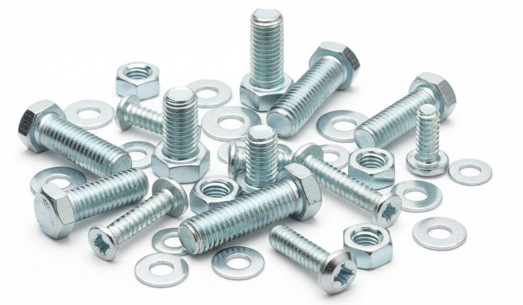

Noticias y actualizaciones
Información del sector, comunicados de la empresa y las últimas novedades de WT Fasteners.
Información del sector, comunicados de la empresa y las últimas novedades de WT Fasteners.

ARCHITECT'26, la Exposición Internacional de Arquitectura y Materiales de Construcción de Tailandia, se llevará a cabo del 28 de abril al 3 de mayo de 2026 en IMPACT Muang Thong Thani en Bangkok. Como el evento insignia más grande e influyente de la ASEAN en la industria de materiales de construcción, la exposición de este año reúne a más de 1,000 marcas de todo el mundo en más de 75,000 m² de espacio de exhibición. Los sujetadores, como categoría central en la ferretería de construcción, enfrentan oportunidades históricas de expansión global impulsadas por el Corredor Económico Oriental de Tailandia y el Ferrocarril de Alta Velocidad China-Tailandia. Este artículo analiza los aspectos destacados de la exposición y las perspectivas del mercado de sujetadores en Tailandia.
Leer mas ->El mercado global de sujetadores alcanzó los $109.6 mil millones en 2025 y se espera que ascienda a $189.9 mil millones para 2035 con una CAGR del 6.3%. La competencia pura de bajo precio ya no es efectiva. Los actores líderes están construyendo ventajas competitivas con carteras de productos de alta gama, líneas de producción inteligentes, entrega ágil y redes globales. Este artículo analiza los impulsores detrás del nuevo panorama y proporciona una ruta de actualización sistemática para las empresas de sujetadores.
Leer mas ->
Mientras que los sujetadores convencionales de grado 10.9 y 12.9 se han convertido en "equipo estándar", la verdadera competencia ha entrado en la "zona prohibida" de la ciencia de materiales. La búsqueda implacable de ligereza y densidad de potencia en aplicaciones downstream está obligando a los materiales de los sujetadores a romper los límites físicos. Este artículo profundiza en la batalla contra la fragilización por hidrógeno del acero de ultra alta resistencia, la revolución de reemplazo a alta temperatura de los plásticos PPA de alto rendimiento y las tecnologías de recubrimiento para entornos extremos en aplicaciones marinas y aeroespaciales.
Leer mas ->
Pequeños pero indispensables, los sujetadores son el "arroz de la industria" para la manufactura moderna. Este artículo analiza su valor de aplicación crítico y las tendencias en automoción, aeroespacial, construcción, nuevas energías y más, destacando cómo los sujetadores de alta resistencia, ligeros e inteligentes impulsan el desarrollo industrial de alta calidad.
Leer mas ->
Se espera que el mercado global de pernos alcance los $51.79 mil millones en 2026, impulsado por una fuerte demanda en nuevas energías e infraestructura. Dos exposiciones emblemáticas – la Exposición Internacional de Sujetadores de Shanghái en mayo y la Exposición de Sujetadores de Shanghái (FES) en junio – se inaugurarán pronto, centrándose en la manufactura inteligente de alta gama y las actualizaciones de equipos, proporcionando una plataforma para la vinculación comercial y la exhibición de tecnología.
Leer mas ->
El aumento de los costos de las materias primas, la escalada de disputas comerciales internacionales y la presión para transformarse de manufactura de baja gama a alta gama están remodelando la industria de los sujetadores. Este artículo analiza los desafíos clave y revela oportunidades estratégicas para un crecimiento sostenible.
Leer mas ->
dejar en blanco – se usará el resumen
Leer mas ->
Dejar en blanco para usar el extracto
Leer mas ->
Dejar en blanco para usar el extracto
Leer mas ->Análisis de las perspectivas del mercado global de sujetadores para 2026, destacando los impulsores de crecimiento en vehículos eléctricos, energías renovables y manufactura inteligente.
Leer mas ->